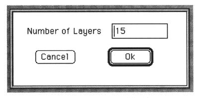
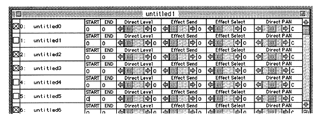

Voice window settings
The following can be set in the
Voice window.
Name of this voice
Bend range
Portamento time
Volume bias
Play mode
You can change settings by clicking on the numbers except in play mode. A pop-up menu appears for play mode.
1 Enter voice name
Double click on the voice name to display the name input dialog box.
First, let's enter a name. Double-click where it is untitled0. The name input dialog box will be displayed. Enter the name.
This name is free. Please name the image that you want to sound from now on.
Pressing the OK button closes this dialog box and the name in the Voice window should be the name you entered. Let's make this tone.
2 Set the number of layers
Double-click the number that precedes the name. A dialog box for setting the number of layers will be displayed.

Enter the number of layers as well as the number of voices. First, enter 1.
This time the Layer window is displayed.

Only one line is displayed here, but don't worry. You can change it later.